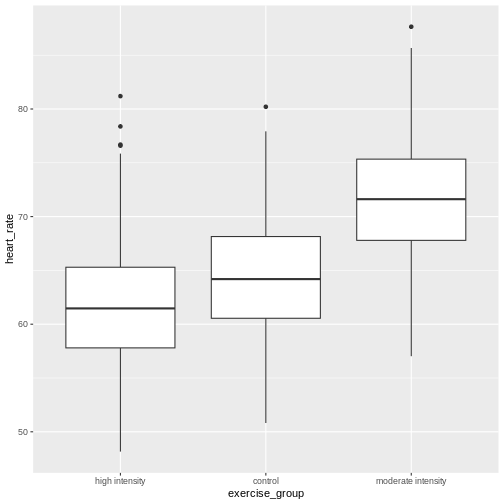
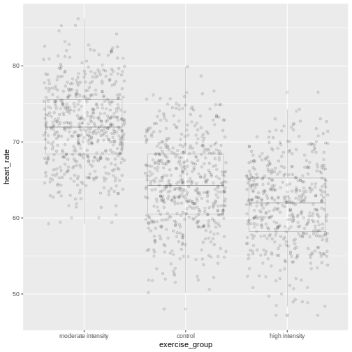
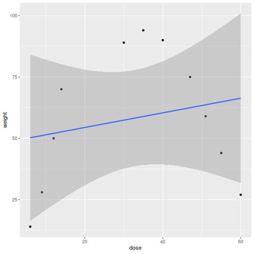
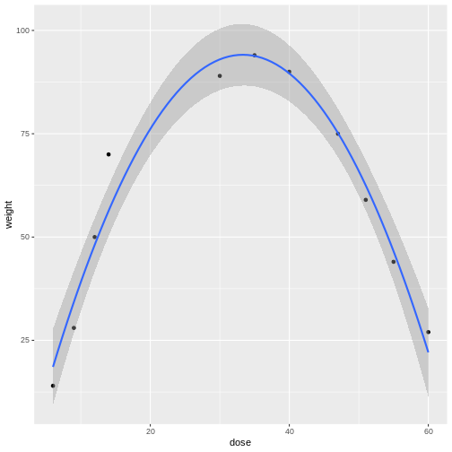

Completely Randomized Designs
Last updated on 2026-02-10 | Edit this page
Estimated time: 40 minutes
Overview
Questions
- What is a completely randomized design (CRD)?
- What are the limitations of CRD?
Objectives
- CRD is the simplest experimental design.
- In CRD, treatments are assigned randomly to experimental units.
- CRD assumes that the experimental units are relatively homogeneous or similar.
- CRD doesn’t remove or account for systematic differences among experimental units.
A completely randomized design (CRD) is the simplest experimental design. In CRD, experimental units are randomly assigned to treatments with equal probability. Any systematic differences between experimental units (e.g. differences in measurement protocols, equipment calibration, personnel) are minimized, which minimizes confounding. CRD is simple, however it can result in larger experimental error compared to other designs if experimental units are not similar. This means that the variation among experimental units that receive the same treatment (i.e. variation within a treatment group) will be greater. In general though, CRD is a straightforward experimental design that effectively minimizes systematic errors through randomization.
A single qualitative factor
The Generation 100 study employed a single qualitative factor (exercise) at three treatment levels - high intensity, moderate intensity and a control group that followed national exercise recommendations. The experimental units were the individuals in the study who engaged in one of the treatment levels.
Challenge 1: Raw ingredients of a comparative experiment
Discuss the following questions with your partner, then share your answers to each question in the collaborative document.
- How would you randomize the 1,500+ individuals in the study to one
of the treatment levels?
- Is blinding possible in this study? If not, what are the
consequences of not blinding the participants or investigators to
treatment assignments?
- Is CRD a good design for this study? Why or why not?
- How would you randomize the 1,500+ individuals in the study to one
of the treatment levels?
You can use a random number generator like we did previously to assign all individuals to one of three treatment levels. - Is blinding possible in this study? If not, what are the
consequences of not blinding the participants or investigators to
treatment assignments?
Blinding isn’t possible because people must know which treatment they have been assigned so that they can exercise at the appropriate level. There is a risk of response bias from participants knowing which treatment they have been assigned. The investigators don’t need to know which treatment group an individual is in, however, so they could be blinded to the treatments to prevent reporting bias from entering when following study protocols. In either case random assignment of participants to treatment levels will minimize bias. - Is CRD a good design for this study? Why or why not?
CRD is best when experimental units are homogeneous or similar. In this study, all individuals were between the ages of 70-77 years and all lived in Trondheim, Norway. They were not all of the same sex, however, and sex will certainly affect the study outcomes and lead to greater experimental error within each treatment group. Stratification, or grouping, by sex followed by random assignment to treatments within each stratum would alleviate this problem. So, randomly assigning all women to one of the three treatment groups, then randomly assigning all men to one of the three treatment groups would be the best way to handle this situation.
In addition to stratification by sex, the Generation 100 investigators stratified by cohabitation status because this would also influence study outcomes.
IMPORTANT For the purpose of learning about analysis of variance we will treat all experimental units as is they are the same. In reality, sex and cohabitation status are important characteristics of participants and should be used in both experimental design and analysis as they were in the actual study. We simplify things here and will look at these important differences in a later episode on Randomized Complete Block Designs.
Analysis of variance (ANOVA)
Previously we tested the difference in means between two treatment groups, high intensity and control, using a two-sample t-test. We could continue using the t-test to determine whether there is a significant difference between high intensity and moderate intensity, and between moderate intensity and control groups. This would be tedious though because we would need to test each possible combination of two treatment groups separately. It is also susceptible to bias. If we were to test the difference in means between the highest and lowest heart rate groups (high vs. moderate intensity), there is more than a 5% probability that just by random chance we can obtain a p-value less than .05. Comparing the highest to the lowest mean groups biases the t-test to report a statistically significant difference when in reality there might be no difference in means.
Analysis of variance (ANOVA) addresses two sources of variation in the data: 1) the variation within each treatment group; and 2) the variation among the treatment groups. In the boxplots below, the variation within each treatment group shows in the vertical length of the each box and its whiskers. The variation among treatment groups is shown horizontally as upward or downward shift of the treatment groups relative to one another. ANOVA quantifies and compares these two sources of variation.
R
heart_rate %>%
mutate(exercise_group = fct_reorder(exercise_group,
heart_rate,
.fun='mean')) %>%
ggplot(aes(exercise_group, heart_rate)) +
geom_boxplot()

By eye it appears that there is a difference in mean heart rate
between exercise groups, and that increasing exercise intensity
decreases mean heart rate. We want to know if there is any statistically
significant difference between mean heart rates in the three exercise
groups. The R function anova() performs analysis of
variance (ANOVA) to answer this question. We provide
anova() with a linear model (lm()) stating
that heart_rate depends on exercise_group.
R
anova(lm(heart_rate ~ exercise_group, data = heart_rate))
OUTPUT
Analysis of Variance Table
Response: heart_rate
Df Sum Sq Mean Sq F value Pr(>F)
exercise_group 2 26960 13480.1 451.04 < 2.2e-16 ***
Residuals 1563 46713 29.9
---
Signif. codes: 0 '***' 0.001 '**' 0.01 '*' 0.05 '.' 0.1 ' ' 1The output tells us that there are two terms in the model we
provided: exercise_group plus some experimental error
(Residuals). The response is heart rate. As an equation the
linear model looks like this:
\(y = \mu + \beta*x + \epsilon\)
where \(y\) is the response (heart
rate), \(\mu\) is the overall mean,
\(x\) is the treatment (exercise
group), \(\beta\) is the effect size,
and \(\epsilon\) is experimental error,
also called Residuals. If you don’t like mathematical
equations, think of them in emoji language.
💗 = 💓 + 💥 * (🏃🚶💃) + ✨
To help interpret the rest of the ANOVA output, the following table defines each element.
| source of variation | Df | Sum Sq | Mean Sq=Sum Sq/Df | F value | prob(>F) |
|---|---|---|---|---|---|
| treatments | \(k - 1\) | \(n\sum(\bar{y_i} - \bar{y_.})^2\) | TMS | TMS/EMS | p-value |
| error | \(k(n - 1)\) | \(\sum\sum({y_{ij}} - \bar{y_i})^2\) | EMS | ||
| total | \(nk - 1\) | \(\sum\sum({y_{ij}} - \bar{y_.})^2\) |
The source of variation among treatments is
shown on the y-axis of the boxplots shown earlier. Treatments have \(k - 1\) degrees of freedom
(Df), where \(k\) is the
number of treatment levels. Since we have 3 exercise groups, the
treatments have 2 degrees of freedom. Think of degrees of freedom as the
number of values that are free to vary. Or, if you know two of the
exercise groups, the identity of the third is revealed.
The Sum of Squares (Sum Sq) for the treatment subtracts
the overall mean for all groups from the mean for each treatment group
(\(\bar{y_i} - \bar{y_.}\)), squares
the difference so that only positive numbers result, then sums (\(\sum\)) all of the squared differences
together and multiplies the result by the number of observations in each
group (\(n\) = 522). If we were to
calculate the Sum of Squares manually, it would look like this:
In the code below, groupMeans are the \(y_i\) and overallMean is the
\(y.\).
R
# these are the y_i
groupMeans <- heart_rate %>%
group_by(exercise_group) %>%
summarise(mean = mean(heart_rate))
groupMeans
OUTPUT
# A tibble: 3 × 2
exercise_group mean
<chr> <dbl>
1 control 64.2
2 high intensity 61.7
3 moderate intensity 71.5R
# this is y.
overallMean <- heart_rate %>%
summarise(mean = mean(heart_rate))
overallMean
OUTPUT
# A tibble: 1 × 1
mean
<dbl>
1 65.8R
# sum the squared differences of the groups and multiply the total sum by n
((groupMeans$mean[1] - overallMean)^2 +
(groupMeans$mean[2] - overallMean)^2 +
(groupMeans$mean[3] - overallMean)^2) * 522
OUTPUT
mean
1 26960.22The source of variation within treatments is called
error (Residuals), meaning the variation among
experimental units within the same treatment group. The degrees of
freedom (Df) for error equals \(k\), the number of treatment levels, times
\(n - 1\), one less than the number of
observations in each group. For this experiment \(k = 3\) and \(n -
1 = 521\) so the degrees of freedom for the error equals 1563. If
you know 521 of the data points in an exercise group, the identity of
number 522 is revealed. Each of the 3 exercise groups has 521 degrees of
freedom, so the total degrees of freedom for error is 1563. The Sum of
Squares for error is the difference between each data point, \(y_{ij}\) and the group mean \(\bar{y_i}\). This difference is squared and
the sum of all squared differences calculated for each exercise group
\(i\).
In the boxplots below, each individual data point, \(y_{ij}\), is shown as a gray dot. The group mean, \(\bar{y_i}\), is shown as a red dot. Imagine drawing a box that has one corner on the group mean for high-intensity exercise (61.7) and another corner on a single data point nearby. The area of this box represents the difference between the group mean and the data point squared, or \((y_{ij} - \bar{y_i})^2\). Repeat this for all 522 data points in the group, then sum up (\(\sum\)) the areas of all the boxes for that group. Repeat the process with the other two groups, then add all of the group sums (\(\sum\sum\)) together.

This used to be a manual process. Fortunately R does all of this labor for us. The ANOVA table tells us that the sum of all squares for all groups equals 46713.
The mean squares values (Mean Sq) divides the Sum of
Squares by the degrees of freedom. The treatment mean squares, TMS,
equals
( 26960 / 2 = 1.3480108^{4} ).
The treatment mean square is a measure of the variance among the treatment groups, which is shown horizontally in the boxplots as upward or downward shift of the treatment groups relative to one another.
The error mean square, EMS, similarly is the Sum of Squares divided by the degrees of freedom, or (46713) divided by (1563). Error mean square is an estimate of variance within the groups, which is shown in the vertical length of the each boxplot and its whiskers.
The F value, or F statistic, equals the treatment mean
square divided by the error mean square, or among-group variation
divided by within-group variation (1.3480108^{4} / 29.9 = 451.04).
F value = among-group variance / within-group
variance
These variance estimates are statistically independent of one another, such that you could move any of the three boxplots up or down and this would not affect the within-group variance. Among-group variance would change, but not within-group variance.
The final source of variation, total, doesn’t appear in
the ANOVA table. The degrees of freedom for the total is one less than
the number of observations, or (522 * 3) - 1 = 1565 for this experiment.
The Sum of Squares for the total the squared difference between each
data point and the overall mean, summed over all groups. This is as if
there were no treatment groups and all observations were grouped
together as one. You can imagine merging all three boxplots into one and
calculating the difference between each individual data point and the
overall mean, squaring the result, and adding the sum of all
squares.
Equal variances and normality
Challenge 2: Checking for equal variances and normality
A one-way ANOVA assumes that:
1. variances of the populations that the samples come from are
equal,
2. samples were drawn from a normally distributed population, and
3. observations are independent of each other and observations within
groups were obtained by random sampling.
One-way ANOVA determines whether a single factor such as exercise influences the response. Two-way ANOVA looks at how two factors influence a response, and whether the two interact with one another. We will look at two-way ANOVA later.
Discuss the following questions with your partner, then share your answers to each question in the collaborative document.
- How can you check whether variances are equal?
- How can you check whether data are normally distributed?
- How can you check whether each observation is independent of the other and groups randomly assigned?
- How can you check whether variances are equal?
A visual like a boxplot can be used to check whether variances are equal.
heart_rate %>%
mutate(exercise_group = fct_reorder(exercise_group,
heart_rate,
.fun='mean',
.desc = TRUE)) %>%
ggplot(aes(exercise_group, heart_rate)) +
geom_boxplot()If the length of the boxes are more or less equal, then equal
variances can be assumed.
2. How can you check whether data are normally distributed?
You can visually check this assumption with histograms or Q-Q plots.
Normally distributed data will form a more or less bell-shaped
histogram.
heart_rate %>%
ggplot(aes(heart_rate)) +
geom_histogram()Normally distributed data will mostly fall upon the diagonal line in a Q-Q plot.
qqnorm(heart_rate$heart_rate)
qqline(heart_rate$heart_rate)- How can you check whether each observation is independent of the other and groups randomly assigned?
More formal tests of normality and equal variance include the Bartlett test, Shapiro-Wilk test and the Kruskal-Wallis test.
The Bartlett test of homogeneity of variances tests the null hypothesis that the samples have equal variances against the alternative that they do not.
R
bartlett.test(heart_rate ~ exercise_group, data = heart_rate)
In this case the p-value is greater than the alpha level of 0.05.
This suggests that the null should not be rejected, or in other words
that samples have equal variances. One-way ANOVA is robust against
violations of the equal variances assumption as long as each group has
the same sample size. If variances are very different and sample sizes
unequal, the Kruskal-Wallis test (kruskal.test())
determines whether there is a statistically significant difference
between the medians of three or more independent groups.
The Shapiro-Wilk Normality Test tests the null hypothesis that the samples come from a normal distribution against the alternative hypothesis that samples don’t come from a normal distribution.
R
shapiro.test(heart_rate$heart_rate)
In this case the p-value of the test is less than the alpha level of 0.05, suggesting that the samples do not come from a normal distribution. With very large sample sizes statistical tests like the Shapiro-Wilk test will almost always report that your data are not normally distributed. Visuals like histograms and Q-Q plots should clarify this. However, one-way ANOVA is robust against violations of the normality assumption as long as sample sizes are quite large.
If data are not normally distributed, or if you just want to be cautious, you can:
Transform the response values in your data so that they are more normally distributed. A log transformation (
log10(x)) is one method for transforming response values to a more normal distribution.Use a non-parametric test like a Kruskal-Wallis Test that doesn’t require assumption of normality.
Confidence intervals
The boxplots show that high-intensity exercise results in lower average heart rate. Remember that these are simulated data and that the actual study measured all-cause mortality after five years of exercise.
R
heart_rate %>%
group_by(exercise_group) %>%
summarise(mean = mean(heart_rate))
OUTPUT
# A tibble: 3 × 2
exercise_group mean
<chr> <dbl>
1 control 64.2
2 high intensity 61.7
3 moderate intensity 71.5To generalize these results to the entire population of Norwegian
elders, we can examine the imprecision in this estimate using a
confidence interval for mean heart rate. We could use only the
high-intensity group data to create a confidence interval, however, we
can do better by “borrowing strength” from all groups. We know that the
underlying variation in the groups is the same for all three groups, so
we can estimate the common standard deviation. ANOVA has already done
this for us by supplying error mean square (29.9) as the pooled estimate
of the variance. The standard deviation is the square root of this value
(5.47). The fact that we “borrowed strength” by including all groups is
reflected in the degrees of freedom, which is 1563 for the sample
standard deviation instead of n - 1 = 521 for the sample
variance of only one group. This makes the test more powerful because it
borrows information from all groups. We use the sample standard
deviation to calculate a 95% confidence interval for mean heart rate in
the high-intensity group.
R
confint(lm(heart_rate ~ exercise_group, data = heart_rate))
OUTPUT
2.5 % 97.5 %
(Intercept) 63.773648 64.712331
exercise_grouphigh intensity -3.182813 -1.855314
exercise_groupmoderate intensity 6.603889 7.931388The results provide us with the 95% confidence interval for the mean
in the control group (Intercept), meaning that 95% of
confidence intervals generated will contain the true mean value.
Confidence intervals for the high- and moderate-intensity groups are
given as values to be added to the intercept values. The 95% confidence
interval for the high-intensity group is from 60.6 to 62.9. The 95%
confidence interval for the moderate-intensity group is from 70.4 to
72.6.
Inference
Inference about the underlying difference in means between exercise groups is a statement about the difference between normal distribution means that could have resulted in the data from this experiment with 1566 Norwegian elders. Broader inference relies on how this sample of Norwegian elders relates to all Norwegian elders. If this sample of Norwegian elders were selected at random nationally, then the inference could be broadened to the larger population of Norwegian elders. Otherwise broader inference requires subject matter knowledge about how this sample relates to all Norwegian elders and to all elders worldwide.
Statistical Prediction Interval
To create a confidence interval for the group means we used a linear model that states that heart rate is dependent on exercise group.
R
lm(heart_rate ~ exercise_group, data = heart_rate)
OUTPUT
Call:
lm(formula = heart_rate ~ exercise_group, data = heart_rate)
Coefficients:
(Intercept) exercise_grouphigh intensity
64.243 -2.519
exercise_groupmoderate intensity
7.268 This effectively states that mean heart rate is 64.2 plus 7.27 for the moderate-intensity group or -2.52 for the high-intensity group. We can use this same linear model to predict mean heart rate for a new group of control participants.
R
### save the linear model as an object
model <- lm(heart_rate ~ exercise_group, data = heart_rate)
### predict heart rates for a new group of controls
predict(model,
data.frame(exercise_group = "control"),
interval = "prediction",
level = 0.95)
OUTPUT
fit lwr upr
1 64.24299 53.50952 74.97646Notice that in both the confidence interval and prediction interval, the predicted value for mean heart rate in controls is the same - 64.2. However, the prediction interval is much wider than the confidence interval. The confidence interval defines a range of values likely to contain the true average heart rate for the control group. The prediction interval defines the expected range of heart rate values for a future individual participant in the control group and is broader since there can be considerably more variation in individuals. The difference between these two kinds of intervals is the question that they answer.
- What interval is likely to contain the true average heart rate for controls? OR
- What interval predicts the average heart rate of a future participant in the control group?
Notice that for both kinds of intervals we used the same linear model that states that heart rate depends on exercise group.
R
lm(heart_rate ~ exercise_group, data = heart_rate)
OUTPUT
Call:
lm(formula = heart_rate ~ exercise_group, data = heart_rate)
Coefficients:
(Intercept) exercise_grouphigh intensity
64.243 -2.519
exercise_groupmoderate intensity
7.268 We know that the study contains both sexes between the ages of 70 and
77. Completely randomized designs assume that experimental units are
relatively similar, and the designs don’t remove or account for
systematic differences. We should add sex into the linear model because
heart rate is likely influenced by sex. We can get more information
about the linear model with a summary().
R
summary(lm(heart_rate ~ exercise_group + sex, data = heart_rate))
OUTPUT
Call:
lm(formula = heart_rate ~ exercise_group + sex, data = heart_rate)
Residuals:
Min 1Q Median 3Q Max
-14.1497 -3.7688 -0.0809 3.7338 19.1398
Coefficients:
Estimate Std. Error t value Pr(>|t|)
(Intercept) 64.5753 0.2753 234.530 < 2e-16 ***
exercise_grouphigh intensity -2.5191 0.3379 -7.456 1.47e-13 ***
exercise_groupmoderate intensity 7.2676 0.3379 21.511 < 2e-16 ***
sexM -0.6697 0.2759 -2.428 0.0153 *
---
Signif. codes: 0 '***' 0.001 '**' 0.01 '*' 0.05 '.' 0.1 ' ' 1
Residual standard error: 5.458 on 1562 degrees of freedom
Multiple R-squared: 0.3683, Adjusted R-squared: 0.3671
F-statistic: 303.6 on 3 and 1562 DF, p-value: < 2.2e-16The linear model including sex states that average heart rate for the
control group is 64.6 less 7.27 for the moderate-intensity group or
-2.52 for the high-intensity group. Males have heart rates that are
-0.67 from mean control heart rate. The p-values
(Pr(>|t|)) are near zero for all of the estimates (model
coefficients). Exercise group and sex clearly impact heart rate. What
about age?
R
summary(lm(heart_rate ~ exercise_group + age, data = heart_rate))
OUTPUT
Call:
lm(formula = heart_rate ~ exercise_group + age, data = heart_rate)
Residuals:
Min 1Q Median 3Q Max
-14.6891 -3.8014 -0.1194 3.7565 19.5980
Coefficients:
Estimate Std. Error t value Pr(>|t|)
(Intercept) 84.1077 10.1807 8.261 3.03e-16 ***
exercise_grouphigh intensity -2.5145 0.3381 -7.437 1.69e-13 ***
exercise_groupmoderate intensity 7.2653 0.3381 21.489 < 2e-16 ***
age -0.2730 0.1399 -1.952 0.0511 .
---
Signif. codes: 0 '***' 0.001 '**' 0.01 '*' 0.05 '.' 0.1 ' ' 1
Residual standard error: 5.462 on 1562 degrees of freedom
Multiple R-squared: 0.3675, Adjusted R-squared: 0.3663
F-statistic: 302.5 on 3 and 1562 DF, p-value: < 2.2e-16We can add age into the linear model to determine whether or not it
impacts heart rate. The estimated coefficient for age is small (-0.27)
and has a high p-value (0.0511467). Age is not significant, which is not
surprising since all participants were between the ages of 70 and 77.
Notice also that the Estimate for average heart rate in the
control group (Intercept) is very high even though it is
statistically significant. This Estimate of 84.1 is far
higher than the confidence interval or prediction interval for average
heart rate of controls that we calculated earlier. The linear model that
best fits the data includes only exercise group and sex.
Sizing a Complete Random Design
The same principles apply for sample sizes and power calculations as were presented earlier. Typically a completely randomized design is analyzed to estimate precision of a treatment mean or the difference of two treatment means. Confidence intervals or power curves can be applied to sizing a future experiment. If we want to size a future experiment comparing heart rate between control and moderate-intensity exercise, what is the minimum number of people we would need per group in order to detect an effect as large as the mean heart rate difference from this experiment?
R
# delta = the observed effect size between groups
# sd = standard deviation
# significance level (Type 1 error probability or false positive rate) = 0.05
# type = two-sample t-test
# What is the minimum sample size we would need at 80% power?
controlMean <- heart_rate %>%
filter(exercise_group == "control") %>%
summarise(mean = mean(heart_rate))
moderateMean <- heart_rate %>%
filter(exercise_group == "moderate intensity") %>%
summarise(mean = mean(heart_rate))
delta <- controlMean - moderateMean
power.t.test(delta = delta[[1]], sd = sd(heart_rate$heart_rate),
sig.level = 0.05, type = "two.sample", power = 0.8)
OUTPUT
Two-sample t test power calculation
n = 15.01468
delta = 7.267638
sd = 6.861167
sig.level = 0.05
power = 0.8
alternative = two.sided
NOTE: n is number in *each* groupTo obtain an effect size as large as the observed effect size between control and moderate-intensity exercise groups, you would need 15 participants per group to obtain 80% statistical power.
Challenge 3: Sizing other completely randomized designs
Would you expect to need more or fewer participants per group to
investigate the difference between:
1. control and high-intensity exercise on heart rate?
1. moderate- and high-intensity?
Recall the inverse relationship between effect size and sample size. Smaller effects require larger samples sizes, while larger effects permit small sample sizes. Check the observed effect sizes for the other two combinations of exercise groups.
highMean <- heart_rate %>%
filter(exercise_group == "high intensity") %>%
summarise(mean = mean(heart_rate))
delta <- controlMean - highMean
deltaThe difference between high intensity and control group means is smaller, which will require a larger sample size to obtain 80% statistical power.
power.t.test(delta = delta[[1]], sd = sd(heart_rate$heart_rate),
sig.level = 0.05, type = "two.sample", power = 0.8)The number of participants required per group is much larger because the observed effect size between high intensity and control groups is much smaller.
- Delta is now the difference in means between moderate and high intensity means.
delta <- moderateMean - highMean
deltaThe observed effect size between these two groups is large, so a smaller sample size will reach 80% statistical power.
power.t.test(delta = delta[[1]], sd = sd(heart_rate$heart_rate),
sig.level = 0.05, type = "two.sample", power = 0.8)A Single Quantitative Factor
So far we have been working with a single qualitative factor, exercise. Often our experiments involve quantitative factors such as drug dose. When working with quantitative factors rather than determining whether there is a significant difference in means between treatment groups, we often want to fit a curve with good precision to the data. We’ve been doing this with linear modeling already even when working with a qualitative factor. We want to design an experiment with enough replicates to estimate the slope of a line with good precision. The equation for a linear model:
\(y = \beta_0 + \beta_1*x + \epsilon\)
is often the first model we fit to the data. The slope of the line is represented by \(\beta_1\) and the experimental error, \(\epsilon\), is the distance from each data point to the line. \(\beta_0\) is the intercept or the mean value. In the following graphic, what would you say about how well the model fits the data, or how large the sum of the errors is? The linear model is shown in blue and the confidence interval shown in gray.

Linear models can be a good first approximation but not so in this case. The model fits badly. Sometimes nature throws a curve, not a line, and a different model is needed. In this case a quadratic model with a squared term fits better.

The distances from each data point to the line are much smaller. Plotting the data is the first step to discovering these kinds of relationships between treatment and response.
Design issues
The design issues for a single factor are the same whether that treatment factor is qualitative or quantitative. How should the experimental units be chosen? How many experimental units should be allocated to each factor level? What factor levels should be chosen? In the previous example involving drug dose you might choose only two levels - high and low - and connect a line. But nature can throw you a curve so choosing intermediate levels between two levels is wise. Subject matter expertise helps to choose factor levels. Other considerations are the choice of response and measurement protocols. Choice of controls is often context-specific.
- CRD is a simple design that can be used when experimental units are homogeneous.